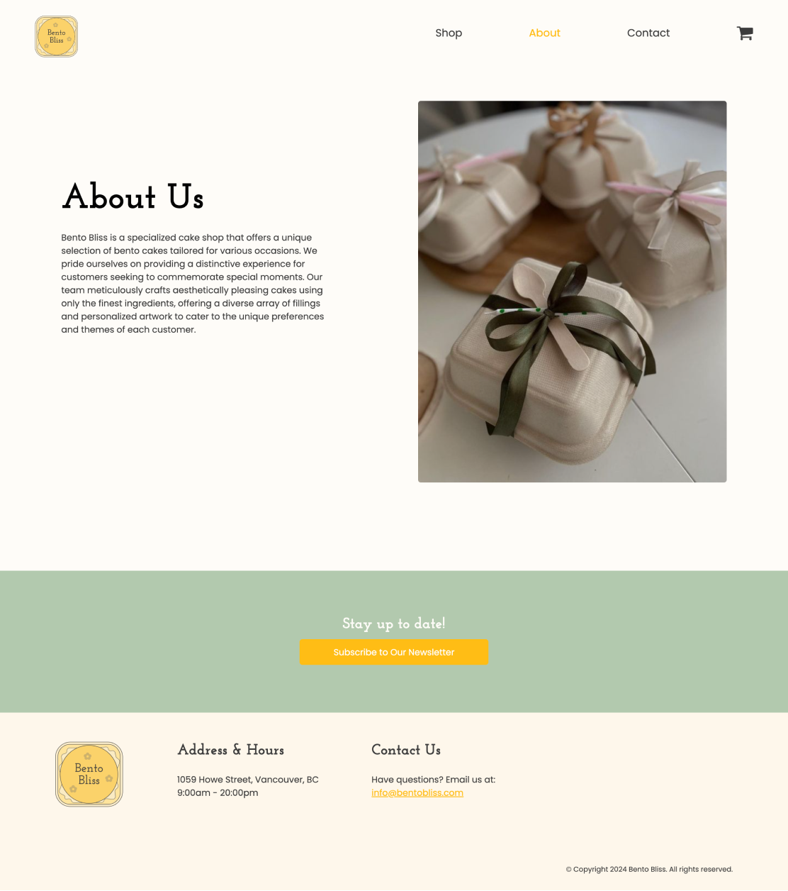
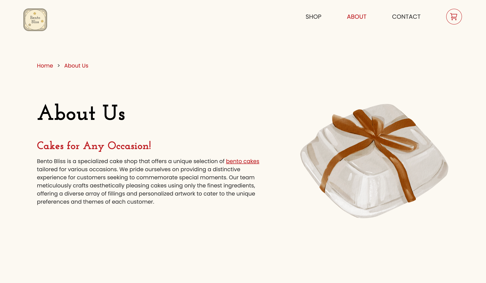

Bento Bliss Website
Web Design & Development
Team
Jae Eun Kim
Timeline
4 Weeks - February 2024
My Role
Interface Design
Development
Tools
HTML
CSS
JavaScript
GitKraken
Sublime
Project Overview
Creating responsive web presence for a cake shop
In this academic project, my teammate, Jae Eun Kim, and I collaborated to design and develop a website for Bento Bliss, a fictional company specializing in bento cakes for special small occasions. Our primary objective was to create an online company website that prioritized usability, maintained a consistent style, and offered relevant content appropriate for the company's products.
Company
Bento Bliss
During the initial phase of our project, we focused on conceptualizing a fictional company, and I made the decision to center it around a cake shop specializing in bento or lunchbox cakes tailored for smaller occasions.
Style Guide
The first step involved creating a custom style guide encompassing the site’s interactive elements, text elements, and templates. This laid the groundwork for consistency and facilitated easier maintenance throughout the project lifecycle. I was responsible for designing interactive elements, combined elements, and branding parts of the style guide.

Interactive Element: Submit Button

Art Direction
Wireframes
Next, I created low-fidelity wireframes, which served as the foundational blueprint for the layout design. These sketches provided a clear visual guide for the layout of elements and overall structure of each page.

Homepage

Shop Page

Product Listing

Checkout
Sitemap

Development
Creating website with HTML, CSS and JavaScript
Following the completion of the design phase, our project advanced towards developing a responsive website. My teammate and I decided to split the tasks to ensure active participation in the development process. Together, we developed a responsive website optimized for viewing across various devices, including phones, tablets, and desktops. Leveraging media queries and relative units, we tailored the website's design to adapt dynamically to different screen sizes, ensuring an optimal user experience across all platforms.
Usability Testing
Issues Found During In-Class Testing
Initial Website Design - About Page
During our class, I conducted quick usability testing with two participants showing our first website iteration. The participants narrated their exploration and impressions as they scrolled through our site, while I took note of their activities, assumptions, and questions. I particularly focused on parts where they encountered difficulties or confusion, aiming to address any concerns they had during the process. Firstly, concerns were raised regarding the potential accessibility issues posed by the yellow color, particularly when contrasted with a beige background. Secondly, it was noted that submit buttons lacked functionality, as they were not linked to any specific destination, such as the homepage or a thank-you page. Finally, participants mentioned difficulties in navigating the website smoothly, indicating that the flow could be improved for better user experience.
Our Solution
Hopw Did We Improve Our Design?
Final Website Design - About Page
I finalized a new set of colours to create a stronger contrast, ensuring sufficient differentiation between the background and foreground colours, featuring beige, red, and gold elements. Additionally, I decided to introduce thank-you pages to ensure a seamless user experience after subscribing to a newsletter or submitting a form. To enhance navigation and provide users with clues regarding their location on the site, I implemented a breadcrumbs functionality. This navigation feature provides context to the website's hierarchy, allowing users to easily backtrack to previous pages if needed.
Challenges
What Did We Struggle With?
Although I had prior experience with HTML, CSS, and JavaScript, I had never applied these skills to develop a complete website before. Therefore, tackling concepts like flexbox and grids presented some challenges. Luckily, with help from our instructor, TA, and online tutorials, I managed to get the hang of it and now I feel a lot more confident in my web development skills.

Collaboration in GitKraken
Takeaways
What Did I Learn?
This project helped enhance my skills in web design and development, particularly in crafting shop websites featuring product catalogues and checkout carts. Additionally, I gained more insight into the significance of style guides for effective collaboration. Overall, I found this project rewarding, deepening my understanding of HTML and CSS significantly.